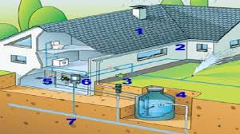

Recaudacion de aguas pluviales
A través de un sistema de captación de agua de lluvia, se puede reciclar el agua. Gracias a un filtro, esta podrá ser reutilizada en el hogar, ya sea para la limpieza o el uso del sanitario. Este sofisticado sistema llega a ser tan eficiente, almacenando alrededor de 500 galones en un solo aguacero, lo que reduciría considerablemente los montos de los recibos de agua.
Paneles solares

Estos se encargan de transformar la energía solar en electricidad y almacenarla en una especie de batería, sustituyendo la conexión a la electricidad pública. Con ayuda de este sistema se reduce el consumo de energía eléctrica.
Lamparas ahorradoras
La función de los paneles solares se puede maximizar con ayuda de las lámparas ahorradoras, las cuales sustituyen a los focos incandescentes. Estas consumen cuatro veces menos energía y tienen un mayor tiempo de vida.
Calentador Solar
Otra forma de aprovechar la energía solar, es sustituir el calentador de depósito por uno solar. Este tipo de dispositivo transmitirá toda la energía térmica al agua y ésta a su vez se mantendrá caliente en un tanque o depósito térmico.
Recubrimientos reflectivos
Este tipo de recubrimientos ayudará a disminuir el calor proveniente de los muros y techos. De esta forma, la casa se mantiene más fresca y se evita que se recurra al uso del aire acondicionado y ventiladores.
Regadera economizadora
Una regadera normal usa de 15 a 23 litros por minuto, mientras que una regadera ahorradora consume de 7 a 10 litros por minuto. Por ello, su instalación permite ahorrar una cantidad considerable del consumo diario.
Purificador de agua
En promedio, cada hogar consume de dos a tres garrafones por semana. Con ayuda de un purificador de agua se estará dejando de consumir el plástico del garrafón y disminuirá hasta un tercio el dinero invertido anualmente.
Si bien, estas tecnologías requieren una inversión inicial, al poco tiempo de uso se verá reflejado el ahorro en el bolsillo, además de que se estará impactando al planeta de forma positiva.